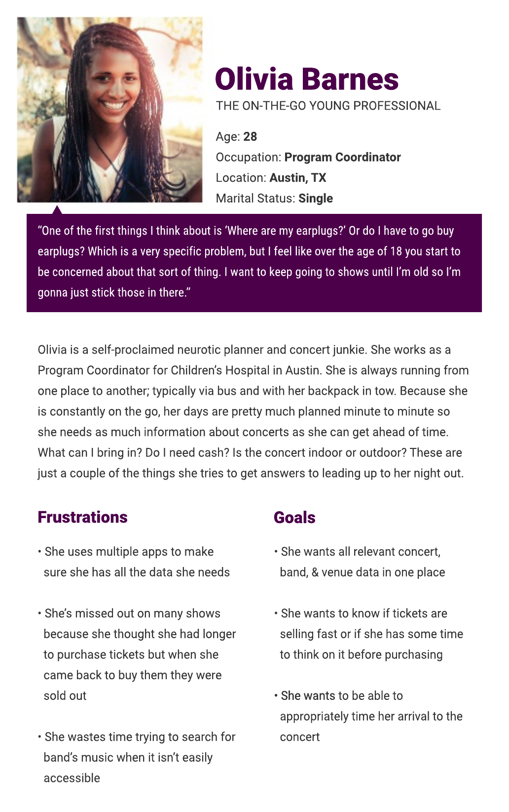

Take the stage
Overview
Type
Concept Project - iOS app
Program
General Assembly
User Experience Design Circuit
Role
UX Researcher, Strategist, Lead Visual/Interaction Designer
Background
The following project was completed in 6 weeks as part of the User Experience Design Circuit. We were given 4 project options; a travel app, a personal connections app for family and friends located in different geographical boundaries, a connected home app, or a "create your own topic" project.
I chose to create my own topic because I'd had an app idea in mind that I was interested in pursuing. In short, that idea started as a way for users to find set times for concerts. It evolved into much more than that.
The Challenge
Provide concert enthusiasts with a quick and easy way to view set times for shows they're attending.
Research
Goals
- Identify behaviors when preparing for a show
- Gauge interest in set time information and how that information could affect their planning
Target Audience
- Individuals between 21 & 35 years of age who regularly attend concerts or have attended a concert within the last 6 months
Hypothesis
Concert enthusiasts don't want to stand around a venue waiting for 'their' performer to take the stage. They want to be able to plan drinks/dinner or other life events around the scheduled concert and want to make sure they're taking proper transportation to get to the venue on time. They also don't want to miss their favorite band due to scheduling conflicts.
{kind=link}
Interview Takeaways
I interviewed 3 people, ages 24-30 and these were the common themes:
- There is an uncertainty between the door open time and show start time
- Prefer to wait at a nearby bar or restaurant instead of standing around before a show
- Want to know who is playing and what time they are playing
- Want an easy way listen to artists and to purchase tickets
- Don’t enjoy cross-referencing apps to get all the details
Competitive Analysis
{kind=link}
Bandsintown and Songkick are the clear front-runners, although neither provide set times and during the competitive analysis I found that they often contained conflicting information which was a pain point my users encountered as well.
The Problem
Current concert tracking apps have issues reliably sourcing concert details. They often contain conflicting or incorrect information and are sometimes even lacking the relevant information their users are seeking.
Users have also complained that current apps in the marketplace can be overwhelming and cluttered.
Stratagize
Pivot
Based on the user interviews and competitive analysis, it became clear that the focus of the app needed to pivot slightly. Instead of focusing on set times, I expanded the scope to center it around being a better one-stop-shop for concerts tracking.
Persona
{kind=link}
Feature Prioritization
A feature prioritization exercise led me to uncover my MVP (minimum viable product). My MVP would include 6 high priority features and 2 high impact, unexpected features to help differentiate Take the Stage from the competition.
-
High Priority Features
- Search by Artist, Venue or Location
- Sync & Track Artists from 3rd party
- User Profile
- User Feed
- Concert Details
- Easy link to Buy Tickets
-
High Impact, Unexpected Features
- Ticket Sales Tracker
- Easy link to Artists' Music
User Flow
Initially I created a complex user flow chart that went through all the various paths a user could take. After reviewing it with my mentor, it made more sense to break each path up into it's own user flow. Below you can see 3 of the potential paths a user can take.
This is the path a new user would take when deciding to register for the app. Once they provide valid registration details, they are asked if they want to sync with a music service of their choice (ie: Spotify). If they decide to sync, they will be directed to their feed populated with the artists they follow on said music service. If they opt out of sync, they will be directed to the geolocation based search page, which would be populated with concerts near them.
{kind=link}
This is the path a user would take if they've opted not to register for the app, but still want to purchase tickets for a concert. They would search for an artist or location and see a list of results. Once they select a concert, they'll be provided with more details and be able to purchase tickets. Once they click the purchase tickets button they will be directed to the 3rd party ticket vendor for said concert.

This is the path a registered user would take if they want to mark themselves as "interested" in attending a concert. First they would need to be signed in. Once signed in, they would be directed to their feed populated with the artists they are currently following. If they see a concert they want to attend, they can click on that concert to be provided with details. Once on the details page, they can check "Interested" or "Going" and the view would update. This would also update their profile and calendar so they can easily navigate back to that concert at a later date.
{kind=link}
Iterate
Sketches & Paper Prototype
I created some initial lo-fi wireframes for paper prototype testing and then tested them with 3 users.
{kind=link}
{kind=link}
"Is this all one button?"
{kind=link}
"So I would touch the name, maybe?"
{kind=link}
"Oh, it might be a swipe too."
Wireframes
Based on the feedback from the prototype, I made the following adjustments to user interactions for the med-fi wireframes:{kind=link}
InVision Prototype & Usability Tests
Next I created a prototype using InVision and performed Usability Tests with 3 users. It led to the following insights:- Positives
- Confusion
{kind=link}
{kind=link}
{kind=link}
What I learned
About the app
After completing the design process, comparing the competitor apps, and revisiting the research, I’ve come to the conclusion that the real issue lies in the data. If I move forward with this project, I would pivot and start researching a solution for data management. I would keep working on the user facing system, as there still seem to be needs there, but I would consider creating a user interface where venues can input and store their data that can then be used as a source of truth for other apps and services.
About the Process
The biggest lesson is that the idea you have in your head at the start of the process is not always the product you’ll come out with in the end. At the beginning my idea was a simple app to display concert set times, as this is the one aspect I feel is really lacking in concert tracking apps today. But after going through the research process, I realized the problem was much larger than that. Users wanted a better concert tracking app, in general. More reliable information, less back and forth between apps, and simpler interfaces.
I also learned to take better notes when rewatching or re-listening to the recorded interviews. I must have gone through each of them at least 3 or 4 times to try to squeeze new information out of them during the process.